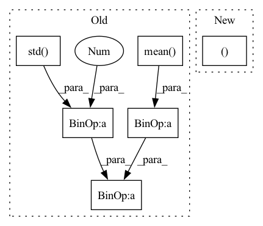

Pattern ID :34510
Before Change
// Normalize features
union = torch.cat((feature_real, feature_fake), dim=0)
feature_real = (feature_real - union.mean()) / (union.std() + 1e-08)
feature_fake = (feature_fake - union.mean() ) / (union.std() + 1e-08 )
// Calc l1 loss of the real and fake feature conditionalized by the corresponding mask
loss = loss + torch.mean(torch.abs((feature_real - feature_fake) * mask))
return lossAfter Change
mask = self.max_pooling_1d(mask.unsqueeze(dim=1))
// Normalize features
union = torch.cat((feature_real, feature_fake), dim=0)
feature_real, feature_fake = kornia.normalize_min_max(union).split(split_size=feature_fake.shape[0], dim=0)
// Calc l1 loss of the real and fake feature conditionalized by the corresponding mask
loss = loss + torch.mean(torch.abs((feature_real - feature_fake) * mask))
return lossIn pattern: SUPERPATTERN
Frequency: 3
Non-data size: 6
Instances Fragment ID: 99295067
Project Name: christophreich1996/semantic_pyramid_for_image_generation
Commit Name: 0a8e0e5794c79bd5af543642790ac24568160288
Time: 2021-03-20
Author: 34400551+ChristophReich1996@users.noreply.github.com
File Name: lossfunction.py
M Class Name: SemanticReconstructionLoss
N Class Name: SemanticReconstructionLoss
M Method Name: forward(4)
N Method Name: forward(4)
M Parent Class: nn.Module
N Parent Class: nn.Module
M File Name: lossfunction.py
N File Name: lossfunction.py
M Start Line: 46
M End Line: 56
N Start Line: 47
N End Line: 56
Before Change
advantage_lst.reverse()
advantage_ = torch.tensor(advantage_lst, dtype=torch.float).to(self.device)
returns_ = advantage_ + old_value_
advantage_ = (advantage_ - advantage_.mean() )/ (advantage_.std()+1e-3 )
for i in range(self.K_epoch):
for state,action,reward,next_state,done_mask,old_log_prob,advantage,return_,old_value \
in self.data.choose_mini_batch(self.minibatch_size ,state_, action_, reward_, next_state_, done_mask_, \After Change
def train_net(self,n_epi,writer):
data = self.data.sample(self.T_horizon)
states, actions, rewards, next_states, done_masks, old_log_probs = data["state"], data["action"], data["reward"], data["next_state"], data["done"], data["log_prob"]
states = torch.tensor(states).float()
actions = torch.tensor(actions).float()
rewards = torch.tensor(rewards).float() Fragment ID: 99295065
Project Name: seolhokim/mujoco-pytorch
Commit Name: 87e9db1820bc2af3e9af6d55a55dbe4e6dd00bf4
Time: 2021-05-09
Author: kilmya1@naver.com
File Name: agent.py
M Class Name: PPO
N Class Name: PPO
M Method Name: train_net(3)
N Method Name: train_net(3)
M Parent Class: nn.Module
N Parent Class: nn.Module
M File Name: agent.py
N File Name: agent.py
M Start Line: 41
M End Line: 60
N Start Line: 42
N End Line: 70
Before Change
:return: (torch.Tensor) Normalized output tensor
// Perform normalization
output = (input - input.mean(dim=(0, 2, 3), keepdim=True) ) / (input.std(dim=(0, 2, 3), keepdim=True) + 1e-08 )
// Get affine parameters
scale = self.linear_scale(class_id)
bias = self.linear_bias(class_id)After Change
// Perform normalization
output = self.batch_norm(input)
// Get affine parameters
scale, bias = self.embedding(class_id.argmax(dim=-1, keepdim=False)).chunk(chunks=2, dim=1)
scale = scale.view(scale.shape[0], scale.shape[-1], 1, 1)
bias = bias.view(bias.shape[0], bias.shape[-1], 1, 1)
// Apply affine parameters Fragment ID: 99295069
Project Name: christophreich1996/semantic_pyramid_for_image_generation
Commit Name: 8d56a34edd21d5874a8d45af97eba926a6f171c0
Time: 2021-03-29
Author: 34400551+ChristophReich1996@users.noreply.github.com
File Name: models.py
M Class Name: ConditionalBatchNorm
N Class Name: ConditionalBatchNorm
M Method Name: forward(3)
N Method Name: forward(3)
M Parent Class: nn.Module
N Parent Class: nn.Module
M File Name: models.py
N File Name: models.py
M Start Line: 446
M End Line: 449
N Start Line: 496
N End Line: 498